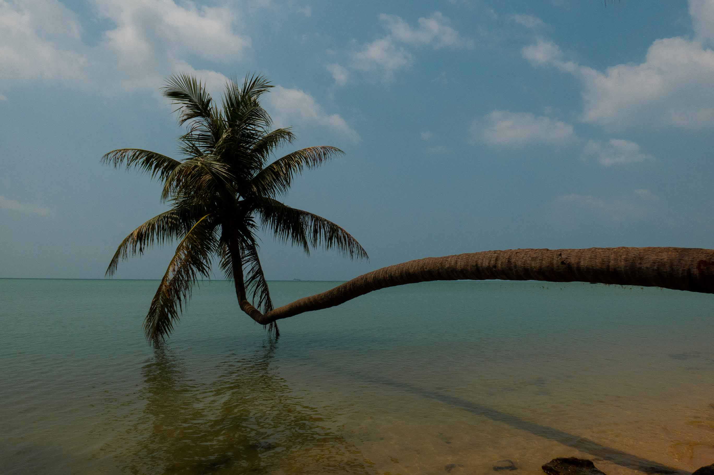

Thailand have been my home for 10 years before moving to Norway. It is definitely the country that I visited the most since I still have some relatives
living there. Climate in this country make it perfect escaping the Norwegian winter, with easy access of flight and great infrastructure for tourist. This
is one of the few country that I keep coming back year after year. Great food, tasty fruits and coconuts. The country have a lot to offer when it comes to
tourism, everything from beachlife to temples.
One of the main reason that I'm keep coming back is food and to enjoy the slow life. I prefer to staying here for longer period of time since everything
is so easy and accessable here. Mostly of the time when I'm here I always trying to go to somewhere new. Like visiting new island that I have not been before, national parks,
and somewhere where barely tourist go. It just became my second home.
Home